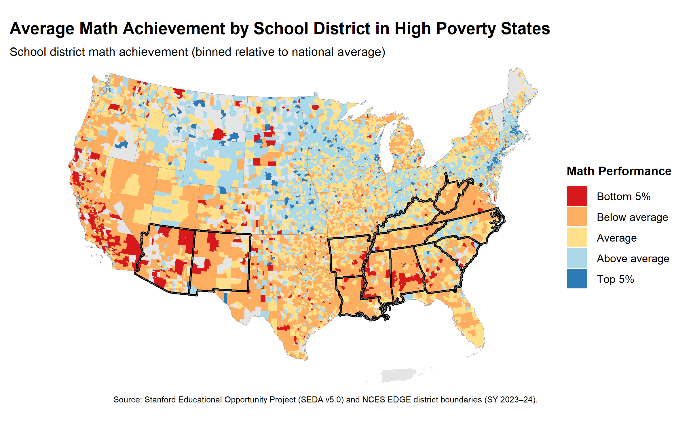

Math achievement: District-level average mathematics performance was collected from “accoutability testing” which is federally mandatory tests that students in grades 3-8 take each year in math and language arts. The federal law also requires states make the aggregated results of those tests public. Student performance is normalized by grade level, such that each district’s average score is expressed relative to the national average for that grade.
State poverty: District-level poverty information about the percentage of households below the federal poverty line was used as an indicator of poverty. Data used to calculate the percentage of households below the federal poverty line was collected from Census tract-level data on residents from the U.S. Census Bureau’s 1970 to 2020 decennial censuses and American Community Survey (ACS) five-year aggregate estimates from 2005-2009 through 2018-2022. State poverty levels were calculated by averaging the percentage of households below the poverty line across districts within each state. States at or above the 75th percentile of this distribution were classified as high poverty.

Overall, states in the western and southern regions of the United States appear to perform worse in mathematics than states along the east coast and in the midwest. One possible explanation is that states with larger populations may have more crowded schools, which could negatively affect student learning and mathematics performance. It is also notable that some states, such as Montana, contain districts that fall both within the top 5% and the bottom 5% of performance. This raises interesting questions about what factors differ across districts within the same state and how those differences might contribute to variation in mathematics achievement.
Examining the relationship between math performance and poverty levels reveals a clear pattern: states with higher levels of poverty tend to have lower mathematics performance. However, there are also notable exceptions to this trend. For example, California appears to have relatively low mathematics performance despite not being among the states with the highest poverty levels. This pattern may reflect state-specific educational policies or structural differences in how mathematics instruction is implemented.
Taken together, these patterns suggest that state-level policies may play an important role in shaping student academic outcomes, even after accounting for differences in economic resources across districts. They also point to the potential influence of population density on educational outcomes. These findings raise important policy questions, such as whether increasing school capacity in densely populated areas or revising state-level educational policies could help improve mathematics performance across the country.